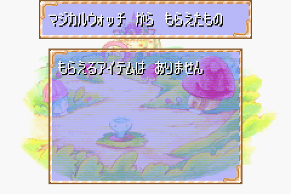

Like Clockwork
The element of time has been a fundamental component of video games for decades. Many titles required tasks be completed within a certain time limit, such as reaching a checkpoint or the end of a level. Others kept track of time to record how long the game had been played, adding that data to save files. Some games revolved entirely around completion times, such as the racing genre. Eventually, more and more systems gained access to persistent clocks, leading to stories that would unfold in real-time, even when the player was away. Today, modern games connected to the internet often feature timed events where exclusive items and rewards are only given out during this brief period. Time stretches through most of gaming history, nearly as old and familiar as High Scores.
While the use of time in video games has changed and grown over several decades, one innovation in particular often goes unnoticed. Previous developers had always let players interact directly with time. For example, escaping the Pillar of Autumn within 6 minutes in Halo CE, or waiting 3 days for fruit to regrow in the original Animal Crossing, or beating Green Hill Zone Act 1 in less than 30 seconds just for fun. Beyond these scenarios, what else could be done? One company decided to change things up. They thought that rather than have people play around with time itself, perhaps they could focus on the time-telling device instead? That is to say, what if people could physically interact with a real clock to manipulate gameplay?
In all likelihood, Konami was merely seeking to exploit a marketing opportunity, not to make something as glamorous or groundbreaking as that. Even so, in the process they created a notable and unique experience. Towards the end of 2003 during the holiday season, the company launched a GBA game, Wagamama☆Fairy: Mirumo de Pon! Hachinin no Toki no Yousei. It was yet another game for Mirumo de Pon, a shoujo anime and manga franchise featuring the antics of the eponymous "Love Fairy" and an energetic but shy teenage girl. Although there were other Mirumo de Pon! games for the GBA, Hachinin no Toki no Yousei (hereafter shortened to HTY for brevity) included a special accessory: a digital watch that featured Game Boy connectivity via the Link Cable.
This peripheral, known as the Magical Watch, was the first (and to date only) time a standalone wristwatch could extensively communicate with one of Nintendo's handhelds. Although it had many capabilities outside of displaying time and date, I hesitate to call it a smartwatch exactly. The Magical Watch was designed primarily as a toy rather than a portable, programmable computer. Even so, by 2003 standards, it managed to pull off some impressive feats such as minigames, fortune-telling, and portraits of different Mirumo de Pon! characters. Above all, however, it unlocked certain items in the game Mirumo de Pon! HTY. The watch is a fascinating and odd piece of hardware, implementing an idea that hasn't really been replicated elsewhere. As a result, it serves as an important part of the GBA's history, despite its relative obscurity.
Gaining Lost Time
As I dive into this bit of game preservation, the theme of time is inescapable. Physical items age, wear down, degrade, and ultimately cease to work as the years go by. When I first acquired the Magical Watch last September, the device had been launched 17 years ago, almost old enough to vote in the United States. This stuff isn't getting any younger, so as cliche as it sounds, time really is of the essence here. Who knows when these units simply won't power on anymore? With this in mind, I made sure to grab one that seemed more or less brand-new. The situation for importing things from Japan has not improved in over 2 full years, making for a costly purchase. Once again, the shipping itself exceeded the price of the auction I won. Given the state of the world (both then and now) such matters can't be helped, and at any rate preservation waits for no one.
Quite unusual for a GBA title, Mirumo de Pon! HTY comes in a large, plastic case. The game and box sit at one end, while the Magical Watch sits tucked in front it. The plastic itself is thankfully easy to deal with, being held down by two strips of tape. The Magical Watch is reminiscent of older interactive wristwatches, particularly the 1998 Pokemon C-Watches. It sports a 32x32 monochrome LCD screen along with 3 buttons on its face. On the back is an opening for a small speaker, which if I had to guess was something piezo-electric, i.e. similar to the Pokemon Mini's. A single CR2032 battery is enough to run the Magical Watch for weeks and weeks on end, however, it seems very picky about just what kind of battery is installed. I cycled through 4 different CR2032s, and only the newest and freshest one seemed to satisfy the Magical Watch. Even though the rest were more than enough for devices like my Pokemon Pikachu 2, the Magical Watch kept showing an error message about the battery level being too low. For this watch, only the best would suffice, I guess.
Mirumo de Pon! Hachinin no Toki no Yousei comes in packaging rarely seen anywhere else as far as GBA games go.
With that minor issue out of the way, I began researching just how the Magical Watch and Mirumo de Pon! HTY communicated. Initially, I didn't have much clue how to actually use the watch with the game or know what menu I needed to select to even start the whole process. The game's manual provided some helpful guidance on what the Magical Watch was supposed to do, but when starting a new save file, the game cannot immediately connect with the watch. On the contrary, use of the Magical Watch has to be earned by playing through a few early portions of the game. Normally this isn't a problem, but Mirumo de Pon! HTY is an adventure game that moves from one situation to the next based on character dialog and events. Without Japanese reading comprehension, it's easy to get lost. I managed to get through some parts on my own, getting the gist of a few sections thanks to my partial understanding of the language, but I had to rely on a series of old YouTube videos. It's very fortunate that a short playthrough was available for such a relatively unknown game.
Eventually, the in-game version of Mirumo obtains his own Magical Watch which then allows the player to use the real-world Magical Watch. One of the more interesting notes about the watch is that it does not come with a built-in Link Cable or even a short stub. In this regard, it's quite unlike every other GBA add-on that uses the serial port. For example the Turbo File Advance and the Soul Doll Adapter both use permanently affixed cables, while the Multi Plust On System or the Battle Chip Gates have a small protruding connector. Here, the Magical Watch does neither, requiring the player to supply their own Link Cable. Stylistically and ergonomically, it wouldn't make sense to keep a built-in Link Cable on a watch, so the player must connect one separately. The original retail value of the Magical Watch (6800 yen) was already somewhat expensive, so to avoid adding to the cost, Konami probably chose not to include a cable in the package.
The Magical Watch's purpose in Mirumo de Pon! HTY is to grant Mirumo several exclusive items to use in the game. These all relate to manipulating the flow of time, which according to the plot has been thrown out of balance. Essentially the Magical Watch makes an easy game aimed at young children even easier. Depending on the amount of points earned playing minigames on the Magical Watch, the player can get different rewards. There are three minigames in all: Dash de Pon (a running race game), Dance de Pon (a DDR-like game), and Catch de Pon (catch falling objects). It's rather impressive that Konami managed to do so much while only having 2 usable buttons as input for these minigames. The third middle-button is dedicated to confirming/entering menus and isn't available in the minigames. I played a few rounds of Dash de Pon, as it was the fastest to complete. Afterwards, I hooked up the Magical Watch to my GBA, went to the options screen, and initiated a transfer.
My first few attempts failed. Each time I tried to start a transfer, both the GBA and the Magical Watch reported an error. After a few more trials, I got one to work, and at this point I realized that the Magical Watch was actually very particular about timing. Once the player sets up the Magical Watch for a transfer, the GBA has to start sending data within a very specific window. If the player misses that, the two sides won't sync. Yet again time itself appears as a reoccurring motif when talking about the Magical Watch, even when normal players are just trying to get it to work! In any case, I had seen how the Magical Watch was supposed to operate. Now all I had to do was figure out how to get an emulated version of that in GBE+.
You'll have to supply your own Link Cable in order to use the Magical Watch.
Opening up a debugging console in my emulator, I saw that the game was setting the serial port to UART mode before switching over to General Purpose mode. For a brief few moments, I was rather confused and worried. No known commercial GBA hardware or software uses UART mode. Had I stumbled upon the one product that defied everything we knew? Not exactly. Mirumo de Pon! HTY switches to UART mode as a way of blocking all serial communication temporarily. It's not unheard of to do such things on the GBA. Switching to unsupported modes like this prevents one side from sending or receiving anything for a time, even accidentally. Mirumo de Pon! HTY has no code handling UART transmissions, so this acts a quick way to shutdown any data on the serial port.
More concerning, however, was the fact that the bulk of the communications happened over General Purpose mode. As in other Edge of Emulation articles, I've complained about General Purpose mode because the protocol could be anything and thus difficult to analyze. In reality, only a small handful of devices for the GBA ever use something other than General Purpose mode. The majority love Geneal Purpose mode, and the Magical Watch is no exception. Normally, I'd write up a ROM hack to intercept all serial transfers from the device to the game, however, that's difficult to do with General Purpose mode. It's far from impossible, but it's quite a hassle. A slower, more technical approach is to pick apart the game's code to see what kinds of responses it wants. This method involves more detective work, but the results can be just as solid.
Watching when the CPU reads certain memory locations is the most logical place to begin. Here, one specific portion of memory handles input/output when using General Purpose mode, the RCNT register. For this mode, typically writing to RCNT means the GBA is sending data, while reading the register means the GBA is receiving data. My goal was to intercept the game's code during the receiving phase and see what it did with incoming transmissions. This can reveal a lot of details about what types of responses the software wants from the hardware and thus gives insight on how the target device should behave.
Using GBE+ to set a breakpoint whenever RCNT was read, I then looked at the emulator's debugger to identify the relevant game code. General Purpose mode grants the GBA full control over the I/O pins for its serial port, and for the Magical Watch, only the SD or Serial Data pin was consistently being read. Mirumo de Pon! HTY would check the value of the SD pin 8 times, once for every bit in a byte, then it would store the results somewhere in RAM. If SD was "1", then the bit would get set HIGH, and if SD was "0", then the bit would get set LOW. This is expected for many serial communications, where every bit is transferred individually. This was basic stuff and not all that surprising. More importantly, however, I now knew where the CPU stored the results. All I had to do was examine when the CPU accessed the results and watch what it did from there.
Mirumo de Pon! HTY read RCNT a total of 72 times, which translates into 9 bytes. I set read breakpoints for the these bytes and waited for the CPU do something with them. Soon after, the game read the first 8 bytes and calculated them into a simple, additive 8-bit checksum. This checksum was compared against the final 9th byte. The format of the data sent from the watch went like this: 8 data bytes plus 1 checksum byte. Later, the code processing the 8 data bytes became rather convoluted and hard to follow, so I decided to switch tactics. I turned to a favorite technique of mine that I'd developed and honed over the years into an delicate artform. It's called "Spray and Pray". Basically, all one does is throw or "spray" random input somewhere, look for changes in output, and "pray" they're smart enough to figure out how it all fits together. Even though this methodology rightfully sounds haphazard and downright unscientific, it works like a charm in certain situations.
So to recap, Mirumo de Pon! HTY connects to the Magical Watch, does a bunch of transfers, and ultimately reads 9 bytes from RAM representing data from the watch. With these 9 bytes in my sights, I began changing them to different numbers to see how the game would react, keeping in mind to manually calculate the checksum as well. Previously all 9 bytes had garbage data in them, since GBE+ did not emulate the watch at all. Predictably, the option to connect to the Magical Watch fails in the emulator. Once the checksum was at least correct, however, the game detected a connection to the Magical Watch. I set all the bytes to zero, and this marked the first successful emulation of the Magical Watch, although no rewards were given. Once I messed around with non-zero values the game reported that I had obtained some items from the device and added them to my inventory.

The first successful emulation of the Magical Watch was anticlimatic. The transfer completed, but no items were actually sent.
Going further, I continued to "Spray and Pray" to determine exactly what each byte did and how a range of different values affected what kinds of items the player would receive. Bytes 0 - 2 were easy to deal with; they merely give the player 3 distinct items in quantities that must not exceed 99. Bytes 3 - 5 were a bit more difficult. They added time to Mirumo's in-game Magical Watch, which prevents him from having to play a penalty minigame to recharge it. Byte 3 increments the additional time in 15 second intervals, Byte 4 increments the time in 1 hour and 4 minute intervals, and Byte 5 increments the time in 2 hour and 30 minute intervals. The game limits the additional time to 2 hours and 30 minutes, so Byte 4 can only be 0x01, or 0x02 at most, and Byte 5 can only be 0x01 at most. This was quite confusing, as it initially looked like Bytes 4 - 5 weren't doing anything; instead I was just setting their values too high for the game to recognize them. Byte 6 was another 99-item thing and Byte 7 was mysteriously not used at all.
So, with all of the bytes now labeled and categorized, I knew what role each one fulfilled in the game. The next step was to actually emulate it in GBE+. To do so, GBE+ had to provide its own value of RCNT when the CPU reads that part of memory to build those 9 bytes. However, GBE+ had to offer the correct value at the correct time. That is to say, GBE+ needed to know when exactly it should begin forcing its own values for RCNT. In a perfect world, this would be incredibly straightforward. Mirumo de Pon! would read RCNT 72 times and bam, it's done. Unfortunately reality was a bit more complicated. For starters, the Magical Watch actually had a structured protocol. The GBA performed a number of writes to RCNT, meaning it sent data to the watch, and both sides exchanged information. It was time to take a closer look at precisely what was going on here.
Watching Signals
When two sides often communicate serially, there is usually a so-called "handshake" or "start signal" one sends to the other. This prevents both sides from fully processing transmissions until they're ready to begin. The moment Mirumo de Pon! HTY switched to UART mode apparently marked the GBA's start signal with the Magical Watch. Even though nothing is sent, it acts as a sort of preparation phase. By going through GBE+'s logs of all reads and writes to RCNT, I found the real start signal involved setting RCNT to 0x80B0, waiting a while, then setting RCNT to 0x8000. This functionally set the SC, SD, and SO pins HIGH then LOW. The Magical Watch waits for this before both the peripheral and the handheld advance to the following stage.
After the start signal, the GBA began writing a long series of bytes to the Magical Watch. Again, as characteristic of serial communication, data was transferred bit by bit. In between each byte, some kind of sync signal was used, briefly toggling the SD pin LOW, HIGH, then LOW. What's rather fascinating about the Magical Watch is that not only can it unlock bonus material on the GBA, the GBA can also unlock extras on the watch. There's a feature in Mirumo de Pon! HTY called "Fairy Picturebook" that contains small portraits and descriptions of various characters met throughout the game. When a new fairy or human is introduced in the story, the Fairy Picturebook is updated. This portrait data is mirrored on the watch.
The first 8 bytes sent from the GBA represent Picturebook data. This was confirmed after comparing several different logs after the Picturebook was updated and the Magical Watch "connected" to GBE+. There are 60 entries in the Fairy Picturebook, so nearly each bit of those 8 bytes (64-bits altogether) signifies whether or not the Magical Watch should unlock an individual portrait. As far as I could tell based on the game manual, that's the extent of the GBA's known connectivity. Nevertheless, the GBA sends 80 bytes total to the watch, leaving another 72 unaccounted for. Here is a table of all the values:
0x58 0x40 0x88 0x48 0x70 0x40 0x50 0x00 0x00 0x01 0x00 0x01
0x58 0x40 0x88 0x48 0x70 0x40 0x50 0x00 0x19 0x06 0x19 0x06
0x58 0x40 0x88 0x48 0x70 0x40 0x50 0x00 0x19 0x06 0x19 0x06
0x58 0x40 0x88 0x48 0x70 0x40 0x50 0x00 0x19 0x06 0x19 0x06
0x58 0x40 0x88 0x48 0x70 0x40 0x50 0x00 0x19 0x06 0x19 0x06
0x58 0x40 0x88 0x48 0x70 0x40 0x50 0x00 0x19 0x06 0x19 0x06
To the best of my knowledge, it seemed to send 5 commands or packets, each consisting of 12 bytes a piece. I really couldn't say for sure what was those bytes were supposed to accomplish once the Magical Watch got them. Out of curiosity, I completely disassembled my Magical Watch (even pulling off the LCD screen, which surprisingly isn't glued or attached at all) to see what kind of hardware was inside. Perhaps if the components were identified, I could learn something about these bytes. I had no such luck. The microcontroller or IC at the heart of the watch was covered in a "glob top", that infamous black epoxy resin that's found on PCBs. Avid Game Boy collectors may know the glob top as a sign of a fake/bootleg cartridges. Here, however, it meant I had no way of knowing what was inside or how it worked. Removing the epoxy required tools and skills far outside my expertise. Whatever these bytes are doing remains an unsolved puzzle. If anyone reading this has any potential leads, feel free to contact me somehow.
The first 8 bytes sent from the GBA transfers Fairy Picturebook data. The rest is currently unknown.
Regardless, those bytes are unneccessary for emulation, as the Magical Watch does not generate any kind of response when it receives them. The next portion of the protocol was the Magical Watch sending bytes to the GBA for items. This is where GBE+ needed to force its own values of RCNT. With the protocol mapped up to this point, I made GBE+ read the GBA's outgoing command bytes and wait for the final 80th byte to finish. Afterwards, the emulator waits for reads to RCNT and places specific values there. Once that is done, Mirumo de Pon! HTY is none the wiser and proceeds as if it had connected with a real Magical Watch, delivering the items to the player.
Only one more section of the protocol was left. Since there is a start signal, a corresponding stop signal tells both sides that all communications are over until further notice. This stop signal looks a lot like the start signal. The GBA switches back to UART mode for serial communications, and after that it writes the values 0x80B0 and 0x8000 to RCNT. For this part, the GBA doesn't need a response from the Magical Watch, so there's nothing for GBE+ to emulate at this stage. However, waiting for the stop signal allows GBE+ to reset some variables and internal states, letting the program ready itself for the next time the watch needs to connect.
With the protocol more or less sorted out, implementing an emulated version of the Magical Watch was a pretty easy process. As previously mentioned, it comes down to changing RCNT 72 times to produce 9 bytes when the CPU reads that register. Once GBE+ knew when to change RCNT, there wasn't much else to do to get the Magical Watch fully emulated as far as the GBA is concerned. After making a menu and interface where users could alter the type and quantity of items they receieved, I felt that my job was complete for the most part.
There isn't much to show here. The actual results of the Magical Watch being emulated are just items filling up your inventory. GBE+ allows you to select how many of each you get.
Of course, this is only a high-level attempt at emulating the Magical Watch. We could conceivably take a more advanced approach, recreating the entire watch through software. That would include running the ROM that contains the watch's programming and making the minigames, calendars, and other features accessible on a PC. Unfortunately, that's something that will have to wait until someone can get past all of that epoxy and extract the watch's data. I'd love to see the Magical Watch faithfully and fully preserved, but the reality is that a lot of these kinds of devices have glob tops and need special handling to dump anything or even find out what hardware is inside. Sadly, the Magical Watch is in the same kind of situation as the Pokemon Pikachu or Pocket Sakura.
Nonetheless, at least one part of the Magical Watch is emulated today. People can now play Mirumo de Pon! HTY and gain special items just as if the real thing were connected. This preserves the unique content and gameplay of this title. When the last Magical Watch fails, everyone will still be able to see what it did and experience it for themselves. Although Mirumo de Pon! HTY itself isn't a particularly impressive game by any means, the Magical Watch was an intriguing device that was one-of-kind, even among all of the other exotic hardware for the Game Boy. Despite mostly being a kind of gimmick for Mirumo fans, it deserves to be remembered in gaming history for adding yet another achievement for Nintendo's handheld. After all, how many other systems can claim to directly link with a watch?
Tempus Fugit
As I stated in the last article, I didn't put out a lot of written material in 2021. Times change, and life has a funny way of putting you in new circumstances. A lot of stuff has been happening behind the scenes, both personally and professionally. That doesn't mean I didn't work on a whole bunch of neat and unemulated hardware. On the contrary, there's almost too much to count! The Magical Watch was taken care of last autumn, so these articles are running behind schedule, just a bit. Between my last piece back in February and now, I even managed to emulate yet another obscure GBA cartridge. The list keeps growing, so I plan to publish things at a faster pace than in the past.
This brings me to another subject. It's been almost 5 full years since I started writing the Edge of Emulation. As they say, time flies. It feels like only yesterday I was poking around the likes of the Barcode Boy or the Pocket Sonar, but in truth it's been quite a while. I never imagined that this would be the path I ended up on as an emudev, but I'm happy where the road has led me. Who knows what else lies ahead? Probably lots of weird accessories few have seen or heard of. Not much of the easy stuff remains, so it's only going to get harder, more complicated, and more challenging. Well, sometimes it's not worth it if it's not going to test your mettle.
The next item to be featured here was just that, a real tough nut to crack, so-to-speak. It was to date one of the most extensive and perplexing GBA cartridges I've ever had to reverse-engineer. Expect to read something juicy, especially for any fans of the Game Boy Advance Video series. Better grab some popcorn while you've got the chance.